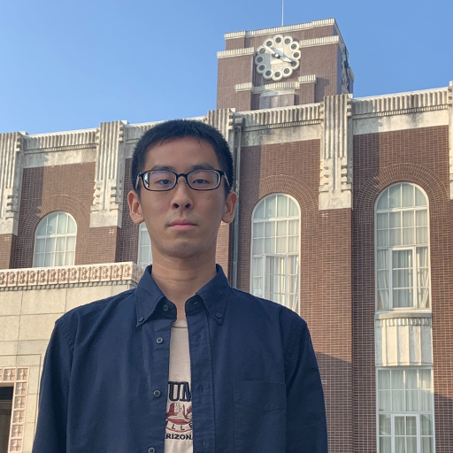

Yusuke Nagata
Yusuke Nagata
I am a master student at Kyoto University. I major in natural language processing. My research interest is text mining and conversation.
Education
| Apr 2012 〜 Mar 2017 | Kindai University Technical College (KUTC) |
| Apr 2017 〜 Mar 2019 | Toyohashi University of Technology (TUT) |
| Apr 2019 〜 | Kyoto University, Graduate School of Informatics |
Publication
peer reviewed
- A Contract Corpus for Recognizing Rights and Obligations,
The 12th International Conference on Language Resources and Evaluation (LREC2020),
non peer reviewed
- 権利義務認識のための契約書コーパスの構築， 言語処理学会第26回年次大会（NLP2020），
- 契約書における権利義務の認識， 2020年度人工知能学会全国大会（JSAI2020），
Work Experience
- RIKEN AIP
- LegalForce
- Linfer
Programming language
- Python3
- Ruby
- C
- C++
- Java
- Processing
- HTML/CSS
- JavaScript
Development environment
- Ubuntu
- emacs
- zsh + tmux